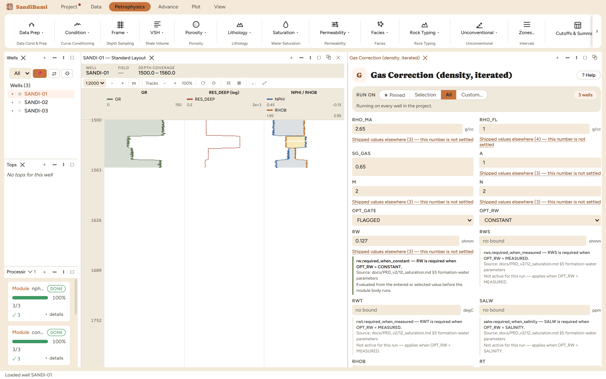

Gas makes the density log read light, which makes density porosity read high. This module removes the effect by iteration: solve porosity and Archie water saturation from the current density, replace the gas volume with liquid (RHOB_GC = RHOB + PHIT·(1−SWT)·(RHO_FL−GASDEN)), and repeat until porosity settles. The gas density itself is a real-gas calculation (Standing pseudo-criticals with a Papay z-factor) at the formation pressure and temperature the precalc step wrote.

On these wells: 3 clean. Exactly 265 samples were corrected, the XOVER_FLAG count to the sample, which is the FLAGGED gate doing its job. GASDEN converged at ~0.102 g/cc, and the largest single restoration put +0.139 g/cc back onto the bulk density. Feed RHOB_GC to density porosity, not to a density-neutron combination, whose own gas handling assumes an uncorrected pair.